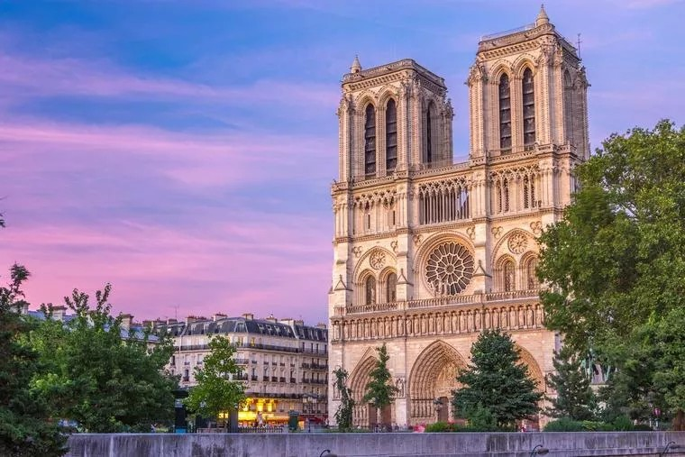

Notre-Dame Cathedral

Construction Started: 1163
Construction Completed: 1345
Famous Features:
Two bell towers
Flying buttresses
Rose stained-glass windows
Gargoyles and stone statues
- Brief Summary to Notre-Dame Cathedral
Notre-Dame de Paris is one of the most famous Gothic cathedrals in the world and a major symbol of France. It is located on Île de la Cité, an island in the River Seine, in the heart of Paris.
Construction began in 1163 and took nearly 200 years to complete. For centuries, Notre-Dame has been the site of important historical events, including royal coronations and religious ceremonies. It also became world-famous through Victor Hugo’s novel The Hunchback of Notre-Dame, which helped save it from destruction in the 19th century.
In April 2019, a devastating fire destroyed the cathedral’s roof and spire. The structure itself survived, and a large restoration project began immediately. The fire deeply affected people in France and around the world.
Notre-Dame is not just a church—it is a cultural, historical, and artistic treasure. It represents French history, religious heritage, and architectural achievement, and it remains one of the most visited landmarks in Paris.